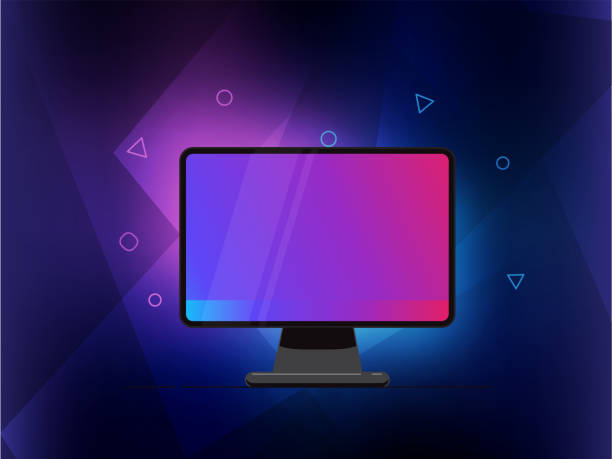
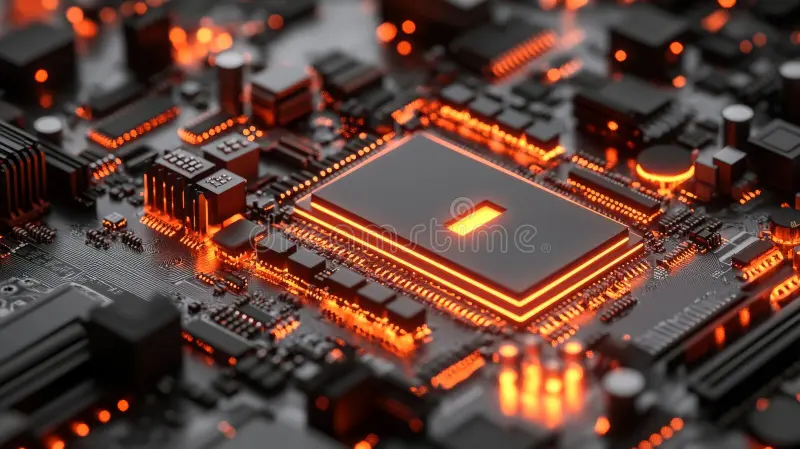
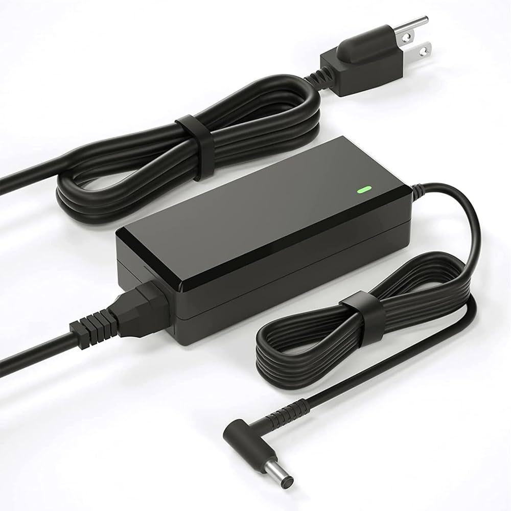
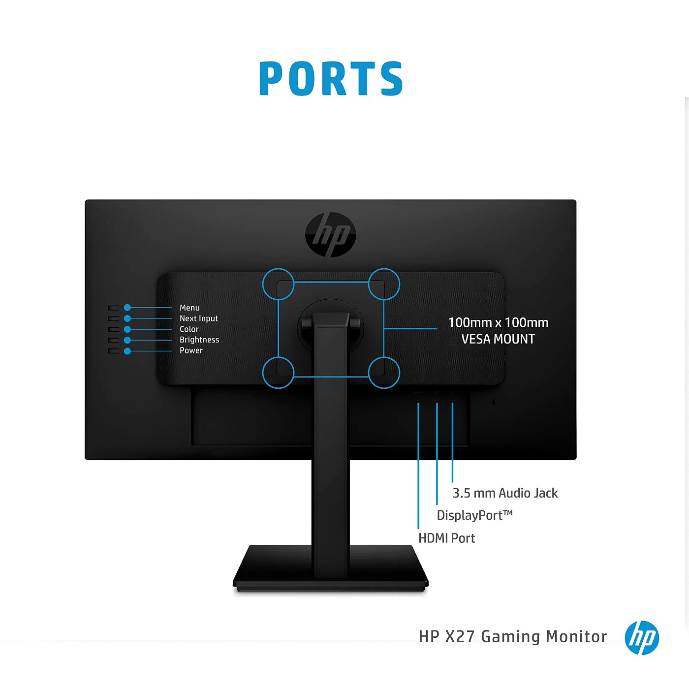

Monitor

Definition
A monitor is an output device that displays visual information generated by a computer in a human-readable form. It acts as the primary interface between the user and the system, allowing interaction with text, images, videos, and graphical elements such as user interfaces and applications.
Modern monitors use advanced technologies such as LED, LCD, and OLED to produce high-resolution and color-accurate visuals. By converting electronic signals into visible output, the monitor enables users to observe and interact with processed data effectively and efficiently.
Working
A monitor works by receiving video signals from the computer’s graphics processing unit (GPU), which contain detailed instructions about color, brightness, and pixel arrangement. These signals are processed internally and sent to the display panel where images are formed.
Inside the monitor, millions of tiny pixels are controlled to display visuals. In LCD and LED monitors, a backlight provides illumination while liquid crystals adjust to control light and color. The screen refreshes multiple times per second, ensuring smooth motion and real-time display of content.
Components
A monitor consists of several important components that work together to produce visual output. The display panel is the main surface where images appear, while the backlight provides the necessary brightness for visibility. The control board processes incoming signals and manages how images are displayed.
Additional components include the power supply unit, which ensures stable operation, and input interfaces such as HDMI, VGA, and DisplayPort that allow the monitor to connect with external devices. These components together ensure accurate color reproduction, brightness control, and smooth performance.

Display Panel
Definition
Main visual surface of monitor.
Working
Controls pixels to form images.
Working
Controls pixels to form images. Includes IPS, TN, OLED technologies.
Backlight
Definition
Provides light for visibility.
Working
Illuminates display panel. Usually LED-based in modern monitors.

Control Board
Definition
The control board is the internal circuit of a monitor responsible for processing incoming video signals and managing how images are displayed on the screen.
Working
The control board receives signals from the computer and converts them into instructions for the display panel. It controls resolution, refresh rate, color output, and synchronization, ensuring smooth and accurate image rendering.

Power Supply
Definition
The power supply unit provides electrical energy to all internal components of the monitor by converting external power into usable form.
Working
It converts alternating current (AC) from the power source into direct current (DC) required by the monitor’s components and distributes stable voltage to ensure proper functioning.

Input Ports
Definition
Input ports are connectors that allow the monitor to receive video signals from external devices such as computers, laptops, or gaming consoles.
Working
These ports receive data through cables like HDMI, VGA, or DisplayPort and transfer it to the control board, which processes the signals and displays them on the screen.